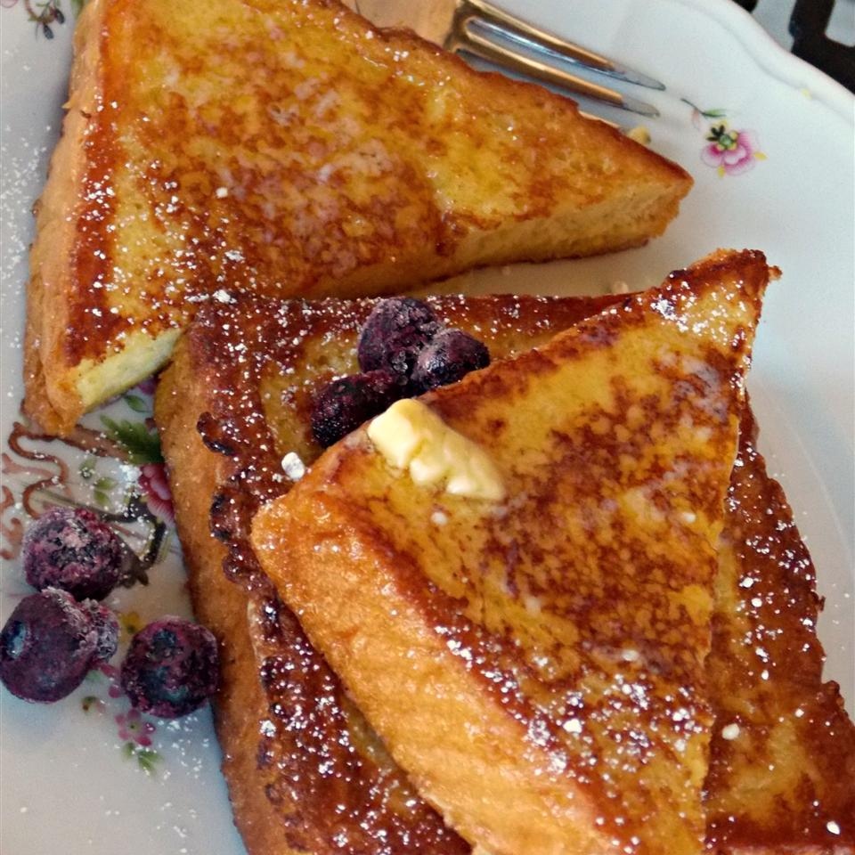

Vanilla-Almond Spiced French Toast

Description
A must for those who like their French toast sweet and super flavorful!
Ingredients
- 2 cups whole milk
- 2 tbsp brown sugar
- 4 large eggs
- 1 tsp vanilla extract
- 1/2 tsp almond extract
- 1/2 tsp ground cinnamon
- 1/4 tsp ground nutmeg
- 1/8 tsp ground allspice
- 8 thick slices slightly stale Texas toast
Directions
- Mix whole milk and brown sugar in a large bowl.
- Beat eggs, vanilla extract, almond extract, cinnamon, nutmeg, and allspice together in a
separate bowk until the eggs are well beaten; add milk mixture and stir to dissolve the brown sugar.
- Heat a non-stick skillet or griddle over medium-low heat.
- Set one slice of toast into the milk mixture; let soak until moistened, about 10 seconds per side.
- Cook the dipped toast in the preheated skillet until bottom is golden brown, 3 to 5 minutes; flip toast
and continue to cook until the other side is browned, 3 to 5 minutes more. Repeat dipping and cooking with
remaining bread slices.
- Enjoy!